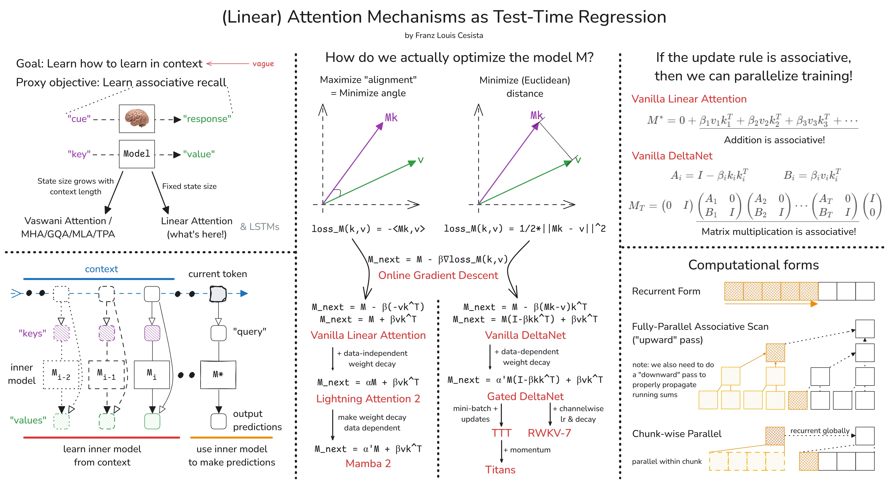

Note: This was originally posted as a Twitter thread. I’ve reformatted it here for better readability.
By now, you’ve probably already heard of linear attention, in-context learning, test-time scaling, etc…
Here, I’ll discuss:
- The unifying framework that ties them all together;
- How to derive different linear attention variants from scratch; and
- How to parallelize training linear attention models
Learning How to Learn In-Context
First, what do we want from an ideal model?
-
In-Context Learning: We want it to learn from information it has ingested so far and use that information to make more accurate predictions moving forward.
-
Computational Expressivity: We want it to have a complex-enough internal machinery so it can actually solve hard problems we encounter in real-life.
-
Efficiency.
Of course, there are other stuff we’d want. But these are the most important ones. And here, we’ll focus on the first one.
To teach the models to learn in context, let’s steal an idea from nature: Associative Recall
- Mom’s cooking triggers memories of my childhood
- Live wires remind me of the time I got electrocuted
That’s associative recall.

A “cue” goes into the brain and a “response” comes out. And the brain learns this “cue”-“response” pairing automatically through experience.
We want our models to learn how to do this too. But in practice, we call the “cue” the “key” and the “response” the “value” (following the Attention is All You Need$^{[1]}$ paper).
From here, we have a (major) architectural design decision to make: Either we let the model’s “state” grow with the context length… or we fix it at a certain size.
The former allows us to keep as much information as we can as we chug through the context, which in turn helps with the model’s expressivity.
While the latter is much more efficient at the cost of expressivity. There’s an upper limit on how much information we can store in this state. And there’s also the question of how we’re gonna teach the model to learn which information are important enough to store and which to discard.

For the rest of the thread, I’ll focus on linear attention… I’ll just make another thread for the former case (stay tuned!).
But where do we actually get the keys and the values?
Another very common (& very old) architectural design decision is to map the input context into key-value pairs.
Interestingly, this results in a two-layer optimization process:
-
The “outer model” optimizes the mapping from the input context into key-value pairs.
-
While the “inner model” treats the outer model as a black box and simply optimizes its state to better predict the values from the keys.
And with more modern optimizers, such as Shampoo/SOAP/PSGD, you can actually think of this as a three-layer optimization process because:
- The optimizer is also trying to learn the geometry of the loss landscape by adjusting the gradient preconditioners.
Deriving Linear Attention Mechanisms from First Principles
If the “inner model” is optimizing something, which loss function is it trying to minimize?
Again, we need to make another design decision. But in general, we want to minimize the “distance” between:
$$model(key) \Leftrightarrow value$$
Question is, how do we define this “distance”?
In practice, we’ve pretty much settled on two of the most basic distance metrics:
- The negative dot product. Minimizing this is equivalent to maximizing the dot product or the “alignment” between $Mk$ and $v$.
- The (squared) Euclidean distance. Minimizing this is equivalent to doing (linear) regression between the keys and the values.
From here, we can simply add the tricks we’ve learned so far from designing optimizers one-by-one to arrive at the different variants of linear attention.
- If we pick the negative dot product loss and do online gradient descent, we’ll get Vanilla Linear Attention.
- If we add a data-independent weight decay, we’ll get Lightning Attention 2 that’s used in the MiniMax-O1 paper.
- If we make the weight decay data dependent instead, we’ll get Mamba 2 that was all the rave last year.
- Now, if we pick the Euclidean loss instead, we’ll get the Vanilla DeltaNet.
- If we add a data-dependent weight decay, we’ll get Gated DeltaNet.
- Then we fork from here:
- If we use non-linear key -> value transforms, we’ll get TTT.
- But if we add a momentum term instead, we’ll get the newly released Titans.
Let’s go back to my claim earlier: that linear attention mechanisms are more efficient. This is clearly true at inference time… but how about training?
Remember: the primary reason pretty much everyone dropped RNNs in favor of (Vaswani) attention is that the latter is very easy to parallelize. Thus, we can scale it up better. And scale, often times, is all you need.
So, when can we parallelize training of linear attention mechanisms? As a rule of thumb, if you can recast your update rule as an associative operation over sequences, you can parallelize it!

Note that there are faster ways to implement DeltaNet’s update rule (e.g. WY representations, etc.). We’ll discuss that next time!
But in practice, how do we actually calculate the running “sums” efficiently? Well, remember those leetcode job interview data structure questions you hate? Well… this is when they’re relevant…

The most naive way is to simply run a loop through the key-value pairs. This is the recurrent form, and this is what we should be doing at inference time. But we can do much better than this.
On the other extreme end is the fully parallel associative scan where we aggregate the running sums by powers of two. If you’ve implemented a Fenwick tree before, this is it.
But in practice, we use the chunk-wise parallel form where we:
- Divide the sequence into chunks.
- Use the parallel form within chunks.
- Use the recurrent form to propagate running sums across chunks.
That’s it for now. Next time, I plan to talk about:
- How to derive different attention mechanisms using tensor string diagrams.
- Circuit complexity of different attention mechanisms.
- LLM reasoning.
Stay tuned!
How to Cite
@misc{cesista2025linearattn,
author = {Franz Louis Cesista},
title = {({L}inear) {A}ttention as {T}est-{T}ime {R}egression},
year = {2025},
url = {https://leloykun.github.io/ponder/test-time-regression/},
}
References
[1] Vaswani, A., Shazeer, N., Parmar, N., Uszkoreit, J., Jones, L., Gomez, A. N., … & Polosukhin, I. (2017). Attention is all you need. URL https://arxiv.org/abs/1706.03762
[2] Gupta, V., Koren, T., & Singer, Y. (2018). Shampoo: Preconditioned Stochastic Tensor Optimization. URL https://arxiv.org/abs/1802.09568
[3] Wang, K., Shi, J., Fox., E. (2025). Test-time regression: a unifying framework for designing sequence models with associative memory. URL https://arxiv.org/abs/2501.12352
[4] Yang, S. (2025). What’s Next for Mamba? Towards More Expressive Recurrent Update Rules. URL https://sustcsonglin.github.io/assets/pdf/talk_250117.pdf